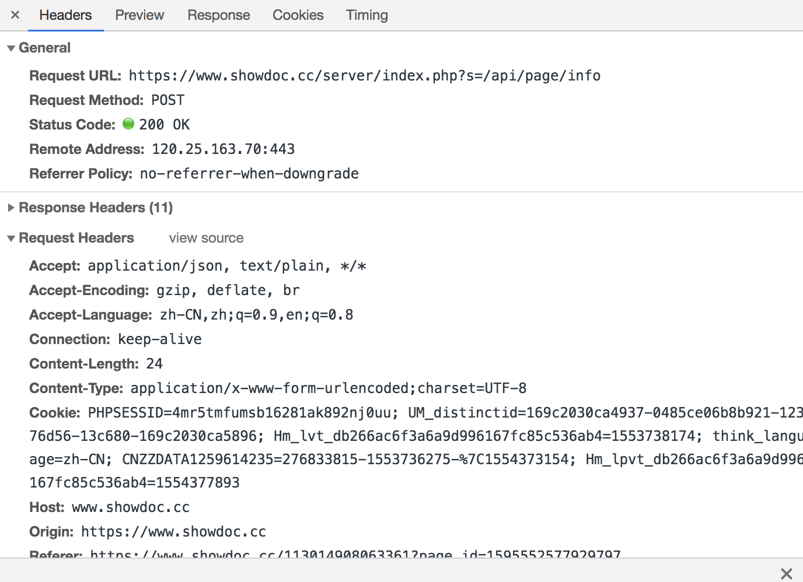

<!DOCTYPE html>
<html>
<head><meta name="generator" content="Hexo 3.8.0">
    <meta charset="UTF-8">
    <meta name="viewport" content="width=device-width, initial-scale=1, maximum-scale=1">
    <meta name="author" content="jishuiyuren">
    
    
    
    
    
    
    <title>http请求 | 吉水于人随笔</title>
    <!-- inject:style -->
    <link href="/css/style.css" rel="stylesheet" type="text/css">
    <!-- endinject -->
    <style>
        .cube-loading {
            top: 0;
            position: fixed;
            width: 100%;
            height: 100%;
            background: url('/images/lg/loading.gif') no-repeat center center;
            background-color: rgba(0,0,0,.7);
        }

        .cube-loading.out {
            display: none;
        }

        .cube-loading:before {
            display: block;
            content: 'Loading';
            position: relative;
            width: 100%;
            top: 50%;
            right: -50%;
            color: #fff;
        }

        @media(max-width: 768px) {
            .cube-loading:before {
                font-size: 1.2em;
                transform: translate(-24px,20px);
                -webkit-transform: translate(-24px,20px);
                -o-transform: translate(-24px,20px);
                -ms-transform: translate(-24px,20px);
            }
        }

        @media(min-width: 768px) {
            .cube-loading:before {

            }
        }
    </style>
    
</head></html>
<body>
<div class="cube-body">
    <nav id="cube-top-memu" class="cube-menu">
    <ul class="cube-menu-collapse">
        
        <li>
            <i class="cube-icon cube-icon-home" aria-hidden="true"></i>
            <a href="/">主页</a>
        </li>
        
        <li>
            <i class="cube-icon cube-icon-archive" aria-hidden="true"></i>
            <a href="/archives">归档</a>
        </li>
        
    </ul>
</nav>
<nav class="cube-side-menu" id="cube-side-menu">
    <ul class="cube-menu-list">
        
        <li>
            <a class="lrc-control">Open Lyrics</a>
        </li>
        
        <li>
            <a class="scroll-to-top">Top</a>
        </li>
    </ul>
</nav>
    <header class="cube-header" id="cube-header">
    
    
    <div class="cube-type">
        <span class="cube-typed-title">吉水于人的笔记</span>
        <span class="cube-typed-cursor">|</span>
    </div>
    
</header>

    <style>
        nav.cube-menu:before {
            content: '';
            visibility: hidden;
            position: absolute;
            left: 0;
            top: 0;
            width: 100%;
            height: 44px;
        
            filter: blur(5px);
            -webkit-filter: blur(5px);
        
            z-index: -1;
            background-image: url('/images/bg.jpg');
            background-repeat: no-repeat;
            background-position: center 44px;
            background-size: cover;
            background-color: transparent;
        }

        header.cube-background.cube-header-background {
            visibility: hidden;
            background-image: url('/images/bg.jpg');
            background-position: center 0;
        }
    </style>
    <header class="cube-background cube-header-background">
        
        <div class="cube-type">
            <span class="cube-typed-title">吉水于人的笔记</span>
            <span class="cube-typed-cursor">|</span>
        </div>
        
    </header>
    <div class="load-header-background"></div>
    <script>
        (function (window) {

            window.headerModule = {}
            window.headerModule.image = {
                width: '2000',
                height: '1414'
            }

        })(window)
    </script>
    
    <div class="cube-content">
        <div class="cube-left">
            <div class="cube-article">
    <h1 class="title">http请求</h1>
    
    <div class="cube-article-header">
        <div class="cube-article-date">
            <i class="cube-icon cube-icon-date" aria-hidden="true"></i>
            <!-- moment.js对象 -->
            2019-03-18
        </div>
        <div class="cube-article-tags">
    <i class="cube-icon cube-icon-tag" aria-hidden="true"></i>
    
</div>
    </div>
    
    <div class="cube-article-content cube-markdown">
        
        <h3 id="http请求"><a href="#http请求" class="headerlink" title="http请求"></a>http请求</h3><p>老生常谈的http请求，简单来说就是几个步骤：域名解析-&gt;发起TCP的3次握手-&gt;建立TCP连接后发起http请求-&gt;服务器响应请求，浏览器得到代码-&gt;浏览器解析代码，并请求html代码中的资源（js、css等）-&gt;浏览器对页面进行渲染呈现给用户。<br><a id="more"></a></p>
<h4 id="域名解析"><a href="#域名解析" class="headerlink" title="域名解析"></a>域名解析</h4><p>域名解析是通过我们输入的域名查找到对应的ip地址，一般来说，会通过以下几种方式查找对应的ip地址：<br>1.浏览器会首先搜索浏览器自身的DNS缓存（缓存时间大概一分钟，存储1000条缓存），查询未果，进入下一步骤</p>
<p>2.浏览器没有查找到对应的条目时，浏览器会搜索操作系统的DNS缓存，没有找到，继续下一步骤</p>
<p>3.如果操作系统中也没找到，就会去读取host文件中是否有对应的ip地址，否则继续下一步骤</p>
<p>4.在host文件中没有查找到，浏览器会发起一个DNS系统调用，即向本地配置的首选DNS服务器（一般是电信运营商提供的，也可以使用像Google提供的DNS服务器）发起域名解析请求（通过的是UDP协议向DNS的53端口发起请求，这个请求是递归的请求，也就是运营商的DNS服务器必须得提供给我们该域名的IP地址），运营商的DNS服务器先查找自身的缓存，找到对应的条目，如果没有找到，运营商的DNS代我们的浏览器发起迭代DNS请求。</p>
<p>一般情况下，以上四个步骤就能找到，但是依旧没有找到，则会进入下面几个步骤：</p>
<ol start="5">
<li><p>操作系统就会查找NetBIOS name Cache（NetBIOS名称缓存，就存在客户端电脑中的），那这个缓存有什么东西呢？凡是最近一段时间内和我成功通讯的计算机的计算机名和Ip地址，就都会存在这个缓存里面。什么情况下该步能解析成功呢？就是该名称正好是几分钟前和我成功通信过，那么这一步就可以成功解析。</p>
</li>
<li><p>如果第5步也没有成功，那会查询WINS 服务器（是NETBIOS名称和IP地址对应的服务器）</p>
</li>
<li><p>如果第6步也没有查询成功，那么客户端就要进行广播查找</p>
</li>
<li><p>如果第7步也没有成功，那么客户端就读取LMHOSTS文件（和HOSTS文件同一个目录下，写法也一样）</p>
</li>
</ol>
<p>如果第八步还没有解析成功，那么就宣告这次解析失败，那就无法跟目标计算机进行通信。只要这八步中有一步可以解析成功，那就可以成功和目标计算机进行通信。</p>
<h3 id="三次握手"><a href="#三次握手" class="headerlink" title="三次握手"></a>三次握手</h3><p>拿到域名解析后的ip地址，User-Agent（一般指浏览器）会以一个随机端口向服务器的web程序80端口发起TCP连接请求。这个连接请求到达服务器端后，进入网卡，然后进入到内核的TCP/IP协议栈（用于识别该连接请求，解封包，一层一层的剥开），还有可能要经过Netfilter防火墙（属于内核的模块）的过滤，最终到达WEB程序（本文就以Nginx为例），最终建立了TCP/IP的连接。<br>1） Client首先发送一个连接试探，ACK=0 表示确认号无效，SYN = 1 表示这是一个连接请求或连接接受报文，同时表示这个数据报不能携带数据，seq = x 表示Client自己的初始序号（seq = 0 就代表这是第0号包），这时候Client进入syn_sent状态，表示客户端等待服务器的回复</p>
<p>2） Server监听到连接请求报文后，如同意建立连接，则向Client发送确认。TCP报文首部中的SYN 和 ACK都置1 ，ack = x + 1表示期望收到对方下一个报文段的第一个数据字节序号是x+1，同时表明x为止的所有数据都已正确收到（ack=1其实是ack=0+1,也就是期望客户端的第1个包），seq = y 表示Server 自己的初始序号（seq=0就代表这是服务器这边发出的第0号包）。这时服务器进入syn_rcvd，表示服务器已经收到Client的连接请求，等待client的确认。</p>
<p>3） Client收到确认后还需再次发送确认，同时携带要发送给Server的数据。ACK 置1 表示确认号ack= y + 1 有效（代表期望收到服务器的第1个包），Client自己的序号seq= x + 1（表示这就是我的第1个包，相对于第0个包来说的），一旦收到Client的确认之后，这个TCP连接就进入Established状态，就可以发起http请求了。</p>
<p>为什么HTTP协议要基于TCP来实现？</p>
<p>目前在Internet中所有的传输都是通过TCP/IP进行的，HTTP协议作为TCP/IP模型中应用层的协议也不例外，TCP是一个端到端的可靠的面向连接的协议，所以HTTP基于传输层TCP协议不用担心数据的传输的各种问题。</p>
<h3 id="建立TCP连接后发起http请求"><a href="#建立TCP连接后发起http请求" class="headerlink" title="建立TCP连接后发起http请求"></a>建立TCP连接后发起http请求</h3><p>进过TCP3次握手之后，浏览器发起了http的请求（看第包），使用的http的方法 GET 方法，请求的URL是 / ,协议是HTTP/1.0</p>
<h3 id="HTTP协议请求（request）和响应（response）报文分析"><a href="#HTTP协议请求（request）和响应（response）报文分析" class="headerlink" title="HTTP协议请求（request）和响应（response）报文分析"></a>HTTP协议请求（request）和响应（response）报文分析</h3><h4 id="请求报文："><a href="#请求报文：" class="headerlink" title="请求报文："></a>请求报文：</h4><p>HTTP协议使用TCP协议进行传输，在应用层协议发起交互之前，首先是TCP的三次握手。完成了TCP三次握手后，客户端会向服务器发出一个请求报文。请求报文的格式如下图所示：<br></p>
<p>（1）请求行中的method<br>请求行的方法，我们常知的有POST、GET、DELETE这些，但是实际上，HTTP协议的请求方法有GET、POST、HEAD、PUT、DELETE、OPTIONS、TRACE、CONNECT。下面简单介绍一下这些请求方式:</p>
<ul>
<li><p>GET请求：<br>1.向特定资源发送请求，查询数据<br>2.在客户端，GET方式在通过URL提交数据，数据在URL中可以看到<br>3.对于GET方式，服务器端用Request.QueryString获取变量的值<br>4.GET方式提交的数据不能大于2KB（主要是URL长度限制）<br>5.由于使用GET时，参数直接显示在地址栏上，所以对于非敏感数据，可以使用GET请求</p>
</li>
<li><p>POST请求：<br>1.向指定的资源，提交数据进行处理请求，有可能创建或修改已有数据<br>2.POST方式，数据放在HTML HEADER内提交<br>3.对于POST方式，服务器用Request.Form获取提交的数据<br>4.POST对提交的数据大小没有限制<br>5.相比于GET请求，POST请求更安全</p>
</li>
<li><p>HEAD请求<br>1.HEAD方法跟GET方法相同，只不过服务器响应时不会返回消息体。一个HEAD请求的响应中，HTTP头中包含的元信息应该和一个GET请求的响应消息相同。这种方法可以用来获取请求中隐含的元信息，而不用传输实体本身。也经常用来测试超链接的有效性、可用性和最近的修改。<br>2.一个HEAD请求的响应可被缓存，也就是说，响应中的信息可能用来更新之前缓存的实体。如果当前实体跟缓存实体的阈值不同（可通过Content-Length、Content-MD5、ETag或Last-Modified的变化来表明），那么这个缓存就被视为过期了。</p>
</li>
<li><p>OPTIONS预请求<br>1.OPTIONS是浏览器对复杂跨域请求的一种处理方式，在真正请求之前，进行一次预请求，即参数OPTIONS的第一次请求，用于试探服务器的响应是否正确，如果OPTIONS请求之后的响应是拒绝的，那么就会停止第二次请求。<br>2.OPTIONS请求产生的情况有三种：（1）请求的方式不是GET/HEAD/POST，（2）POST请求的Content-Type并非application/x-www-form-urlencoded, multipart/form-data, 或text/plain，（3）请求设置了自定义的header字段</p>
</li>
<li><p>PUT请求<br>与GET不同的是，PUT请求是向服务器端发送数据的，从而改变信息，该请求就像数据库的update操作一样，用来修改数据的内容，但是不会增加数据的种类等，也就是说无论进行多少次PUT操作，其结果并没有不同。</p>
</li>
<li><p>DELETE请求<br>请求服务器删除Request-URI所标识的资源</p>
</li>
<li><p>TRACE请求<br>回显服务器收到的请求，主要用于测试或诊断</p>
</li>
<li><p>CONNECT请求<br>HTTP/1.1协议中预留给能够将连接改为管道方式的代理服务器。</p>
</li>
</ul>
<p>（2）请求首部</p>
<ul>
<li><p>Accept：请求的对象类型。如果是“/”表示任意类型，如果是指定的类型，则会变成“type/”。</p>
</li>
<li><p>Accept-Language：使用的语言种类。</p>
</li>
<li><p>Accept-Encording：页面编码种类。</p>
</li>
<li><p>Accept-Charset：页面字符集。说到这里，需要解释以下字符集和编码的区别。字符集通常对应着一种语言，将语言中的所有字符集合起来就可以视为一种字符集，这样我们可以看出，中文并非是一种字符集，因为中文无法使用一些字符来进行表示；而编码则是将字符转换为计算机所能识别的2进制数的一种方式，例如常说的unicode，UTF-8，ANSI等等，我们在访问一些国外网站会出现乱码的原因就是因为我们浏览器所使用的编码与页面所使用的编码不能互相识别。我们常说的BIG5和GB2312都是编码。</p>
</li>
<li><p>User-Agent：提供了客户端浏览器的类型和版本。</p>
</li>
<li><p>Host：连接的目标主机，如果连接的服务器是非标准端口，在这里会出现使用的非标准端口。</p>
</li>
<li><p>Connection：对于HTTP连接的处理，keep-alive表示保持连接，如果是在响应报文中发送页面完毕就会关闭连接，状态变为close。</p>
</li>
</ul>
<h4 id="响应报文"><a href="#响应报文" class="headerlink" title="响应报文"></a>响应报文</h4><p>当收到get或post等方法发来的请求后，服务器就要对报文进行响应。状态行给出了服务器的http版本，以及一个响应代码。响应代码是服务器根据请求进行查找后得到的结果的一种反馈，共有5大类。分别以1、2、3、4、5开头。1**表示接收到请求，继续进程，在发送post后可以收到该应答。</p>
<ul>
<li><p>2**表示请求的操作成功，在发送get后返回。</p>
</li>
<li><p>3**表示重发，为了完成操作必须进一步动作。</p>
</li>
<li><p>4**表示客户端出现错误。</p>
</li>
<li><p>5**表示服务器出现错误。</p>
</li>
<li><p>其余部分称为应答实体。</p>
</li>
</ul>

    </div>
</div>

<div class="cube-article-nav">
    <ul>
        
        <li class="prev">
            <a href="/2019/03/18/article10/">
                <i class="cube-icon cube-prev" aria-hidden="true"></i>
                js异步编程总结
            </a>
        </li>
        
        
        <li class="next">
            <a href="/2019/03/18/article8/">
                地图导出
                <i class="cube-icon cube-next" aria-hidden="true"></i>
            </a>
        </li>
        
    </ul>
</div>


<!-- TODO 根据theme.comment的内容进行入口选择 -->


        </div>
        <div class="cube-right">
            
<div class="cube-author cube-sidebar" id="cube-author">
    
    
    <span>jishuiyuren</span>
    
    
    <div class="count">
        <a class="count articles"><span>15</span>Article</a>
        <a class="count tags"><span>3</span>Tags</a>
        <a class="count categories"><span>0</span>Categories</a>
    </div>
</div>


<div class="cube-recent-posts cube-sidebar" id="cube-recent-posts">
    <div class="title">
        <a>Recent Posts</a>
    </div>
    <ul class="list">
        
        
        <li>
            <!-- TODO 如果文章要显示图片，那么在front-matter上添加preview属性(url or path) -->
            
            <div class="normal">
                <p class="index first">
                    <span>1</span>
                </p>
                <p class="title">
                    <a href="/2019/04/09/article/" title="地图出图/打印">地图出图/打印</a>
                </p>
            </div>
            
        </li>
        
        
        
        <li>
            <div class="normal">
                <p class="index">
                    <span>2</span>
                </p>
                <p class="title">
                    <a href="/2019/04/02/article15/" title="视频播放进度记录">视频播放进度记录</a>
                </p>
            </div>
        </li>
        
        
        
        <li>
            <div class="normal">
                <p class="index">
                    <span>3</span>
                </p>
                <p class="title">
                    <a href="/2019/04/02/article14/" title="微信小程序的上拉加载功能">微信小程序的上拉加载功能</a>
                </p>
            </div>
        </li>
        
        
        
        <li>
            <div class="normal">
                <p class="index">
                    <span>4</span>
                </p>
                <p class="title">
                    <a href="/2019/03/18/article13/" title="搭建一个weex项目">搭建一个weex项目</a>
                </p>
            </div>
        </li>
        
        
        
        <li>
            <div class="normal">
                <p class="index">
                    <span>5</span>
                </p>
                <p class="title">
                    <a href="/2019/03/18/article12/" title="arcgis api + webpack前端工程化开发">arcgis api + webpack前端工程化开发</a>
                </p>
            </div>
        </li>
        
        
    </ul>
</div>


<div class="cube-links cube-sidebar" id="cube-links">
    <div class="title">
        <a>Links</a>
    </div>
    <ul class="list">
        
        <li>
            
            
            
            
            <a href="https://github.com/jishuiyuren" target="_blank">吉水于人的GitHub</a>
        </li>
        
    </ul>
</div>


        </div>
    </div>
</div>
<footer class="cube-footer">
    
© 2017 jishuiyuren

<br>
Powered by <a href="https://hexo.io/" target="_blank">Hexo</a>.&nbsp;Theme by <a href="https://github.com/ZEROKISEKI" target="_blank">AONOSORA</a>
</footer>
<!-- inject:script -->
<script src="/js/script.js"></script>
<!-- endinject -->
<div class="cube-loading out"></div>
</body>
</html>